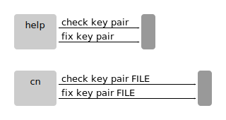

cn check key pair FILEChecks if the key pair FILE is complete, i.e. that a valid private key and a matching public key exists, and its account list is correct.
cn fix key pair FILEFixes the key pair FILE.
If your public key is missing, you have two ways to recover it:
1. If you know your public key hash, you may find a copy of your public key on one of your object stores. The public key is usually the first object being uploaded to any object store you use, and therefore often available somewhere.
2. Derive a new public key from your private key using "cn fix key pair …". Note that the new public key may have a different hash. Since the public key hash is used as actor identifier (actor hash, account hash), your actor may be perceived as a new actor.
Syntax
